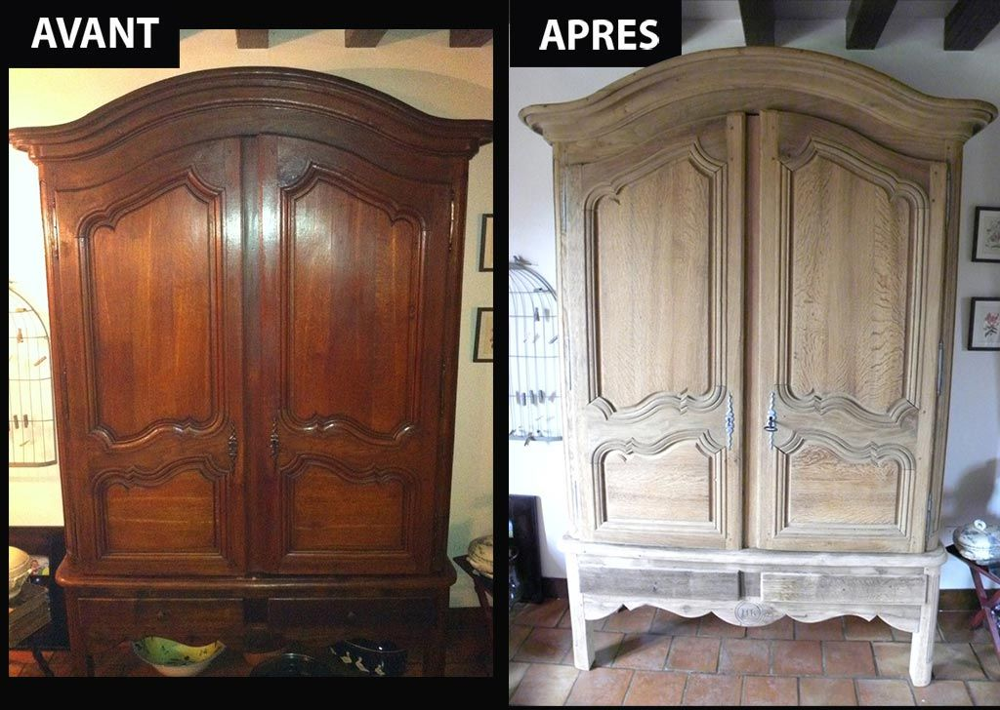

reparation de meubles anciens
Un savoir-faire artisanal pour redonner éclat et solidité à vos meubles de famille, buffets, armoires ou commodes.
Chez ArtiBois, nous redonnons vie à vos meubles en bois, qu’ils soient anciens ou contemporains.
Chez ArtiBois, nous redonnons vie à vos meubles anciens ou abîmés.
Table rayée, chaise cassée, armoire ternie ? Nos artisans réparent, poncent et rénovent chaque pièce avec soin et précision.
Nous privilégions des techniques traditionnelles et des produits écologiques pour un rendu durable et respectueux de l’environnement.
Un savoir-faire artisanal pour redonner éclat et solidité à vos meubles de famille, buffets, armoires ou commodes.

Nous intervenons aussi sur du mobilier contemporain avec des techniques de collage, ponçage et vernissage innovantes.